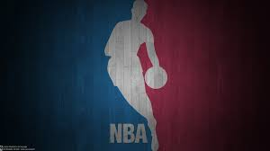
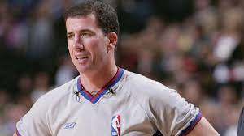

In 2007 the integrity of the NBA was put into jeopardy. This is because it was discovered multiple times during the NBA season referees were proven to be fixing games. This was first brought to the attention of the public when the New York Post released an article “NBA IN A “FIX”.” The main referee that was accused is Tim Donaghy. The reports claimed that Donaghy had started betting on games in from 2002-2007 and had connections to organized crime. It was believed that he was making hundreds of thousands of dollars each season.
Before games Donaghy would inform casinos to set odds of players at different amounts to entice betters to place lots of money on certain games. After many people were baited into the casinos trap, Donaghy would change the outcome of the game through calls against or for a certain team.
One of Tim Donaghy's most famous “fixed” games was game 3 of Suns vs Spurs in the 2007 Western Conference semifinals. Throughout the game there were many questionable calls. Amare Studmire was only able to play 21 minutes compared to his normal 38 minutes in 2007 due to early foul trouble. Steve Nash was also hacked many times, yet no foul was called. With two star players for the Suns being limited to their play the Spurs came away with the win and took a 2-1 lead in the series. 
Another game that did not end well refereed by Tim Donaghy was in 2002 during the 2002 Western Conference finals Game 6 between the Las Angeles Lakers and Sacramento Kings. The Kings entered the game up three games to two in the best-of-seven series. During the game the Lakers shot 40 free throws while the Kings only shot 25. During 2006 NBA teams shot an average of 26 free throws. Also, during the game Kobe Bryant elbowed Mike Bibby in the face and no foul was called. Shaqil O’Neil was also said to be pushing Vlade Divac, but the foul call was on Divac. This resulted in a game 7 being played and the Las Angeles Lakers winning the NBA finals for the third year in a row. On July 29, 2008, Donaghy was sentenced to 15 months in prison, and three years of supervised release. 